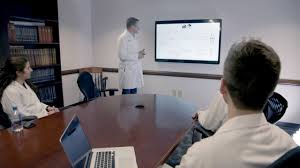
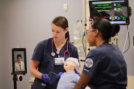

Impacts Collabortive telepresence has on Health Care. |
|||||
There is no doubt that technological advancements are transforming the entire healthcare industry. The proliferation of new collaboration technologies is helping to address issues such as:
Video services like video conferencing have taken healthcare to a whole new level. With the ability to confer and train with doctors anywhere in the world, many hospitals and healthcare institutions have changed for the better. The increasing complexity of healthcare and shortage of clinical specialists needs to be addressed through communication, collaboration and coordination of resources to ensure timely delivery of clinical expertise. Remote Presence is a next generation telemedicine technology platform which combines the power of robotics, wireless, and the internet to enable hospitals and physicians to bring the right care to the right patient at the right time. For example, Remote Presence has been successfully implemented in a hub and spoke model allowing stroke neurologists at a stroke center of excellence to provide the spoke hospital staff with patient consultation and training services. The results are improved geographical reach of stroke specialist care throughout the region with significant impact on patient outcomes as well as improved alignment with established care standards and best practices.
|  |  |
Telepresence can be used in the medical field to serve remote rural areas, allow access to specialists across the world, increase collaboration, and lower costs. If one of your family members were sick, you would want them to be seen by the best medical professional in the world. However, unless you happened to live close to a specialist, you would incur high travel and accommodation costs in addition to the ever-increasing medical costs. Since most visits to a doctor consist of the doctor talking with the patient and sizing them up by how they look, act, walk,etc., the use of this technology for those types of visits is a perfect application of the clarity and immersive feel of telepresence. It also reduces cost to the patient in time and travel and improves accessibility to, and the reach of, specialists all over the world. This accessibility is especially important in rural areas where patients may have to drive hours for a relatively simple doctor's appointment. Many patients may not show up for appointments or put off making an appointment. Missed or delayed appointments can cause otherwise treatable conditions to become more severe than if they were detected early through regular visits. The ability to diagnose and treat problems before they become serious addresses the Accountable Care Organization mission to reduce hospitalizations and readmissions. Even if surgery is required, many of the pre- and post-operation appointments can be handled with "care-at-a-distance" through telepresence, reducing the patient's costs for those visits as well.